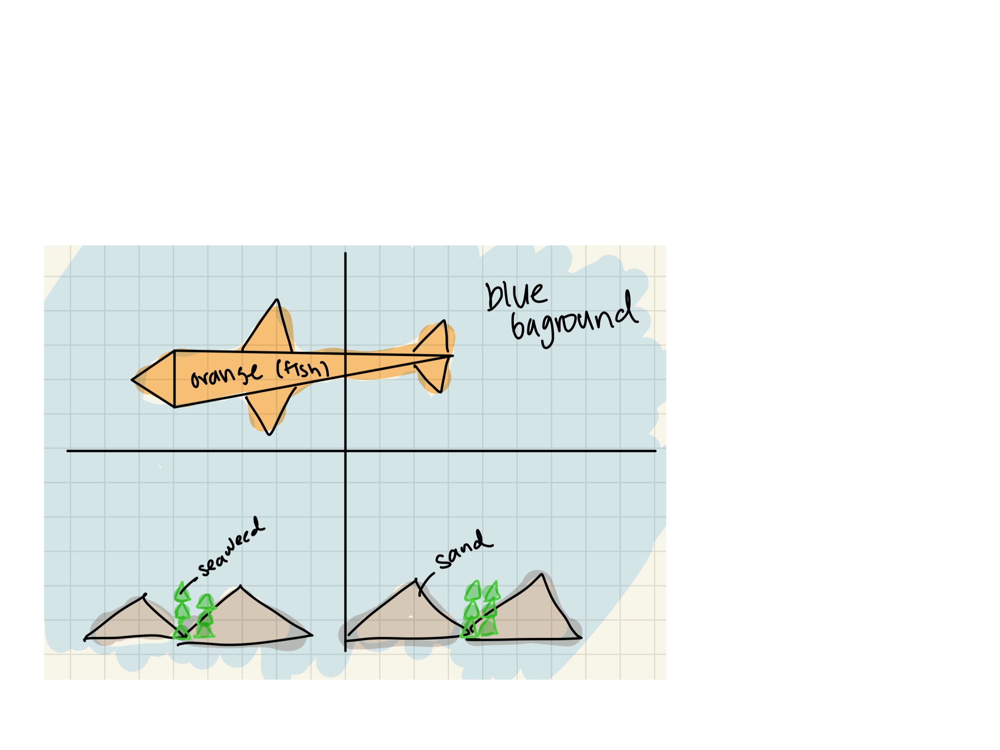

Notes: I tried to make the cat chases mouse game. The goal was that
the cat would just appear wherever the mouse moved, and then disappeared when the mouse
moved again, but it wasn't working. Right now it just appears when you click down, and
then disappears when you leave that spot. I don't want to turn it in two days
late so I am
just doing it as it is.
Original Picture:
